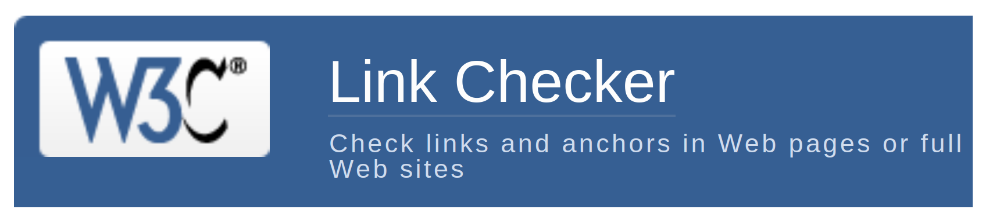
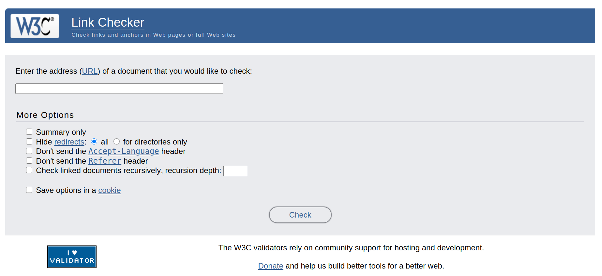
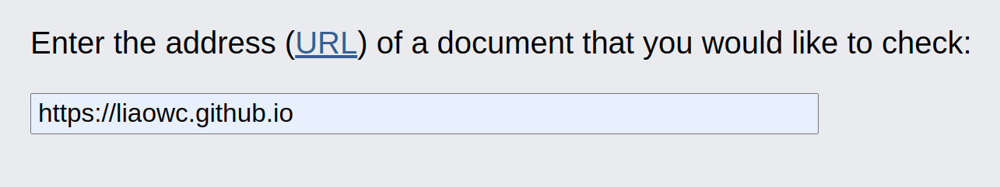
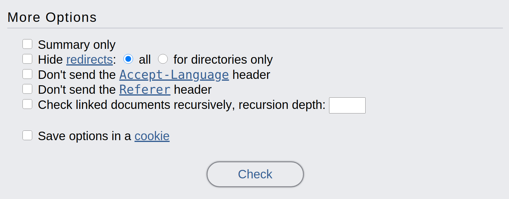
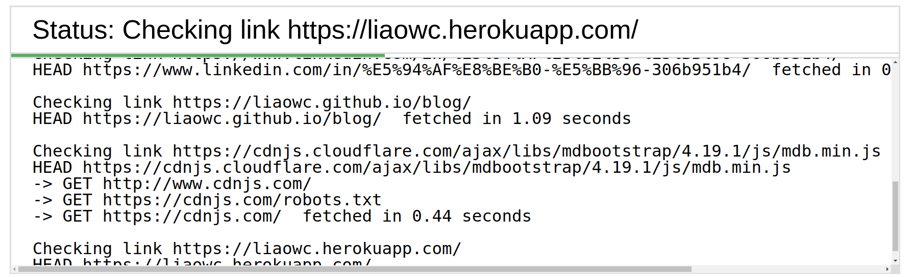
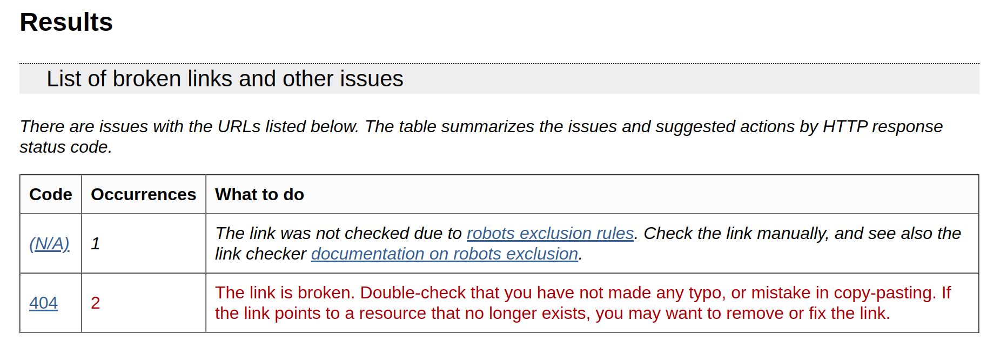
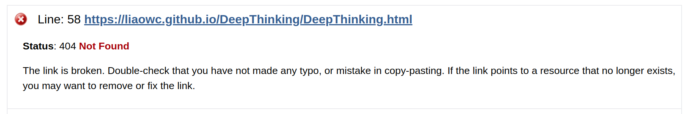
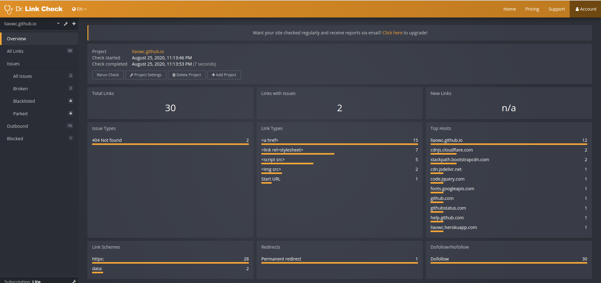

要如何檢測網站的連結是否有效？使用W3C Link Checker和Dr. Link進行網頁連結檢測
Chinese
網頁維護
W3C Link Checker
Dr. Link Check
Website
written by
LiaoWC
on 2020-08-25
你的網站上總是佈滿了琳瑯滿目的超連結？這麼多連結使你維護感到困難？今天筆者將介紹一款實用網頁工具—W3C Link Checker，協助你快速方便確認網頁上的連結有效性。

W3C Link Checker 使用介紹
進入W3C Link Checker網站

輸入您要檢測的網址。例如：

可以選擇更多的選項；之後按check即開始。

等待檢測完畢

閱讀檢測結果

網頁下方會有細項解釋。例如：

如果你的網站W3C Link Checker無法檢測怎麼辦？試試Dr. Link Check
網頁連結：https://www.drlinkcheck.com/
這個網站十分視覺化，只要在首頁輸入您的網站地址，按下Start Check，就能開始檢測。
檢測結果如下

本篇圖片來源：
https://validator.w3.org/checklink
https://www.drlinkcheck.com/